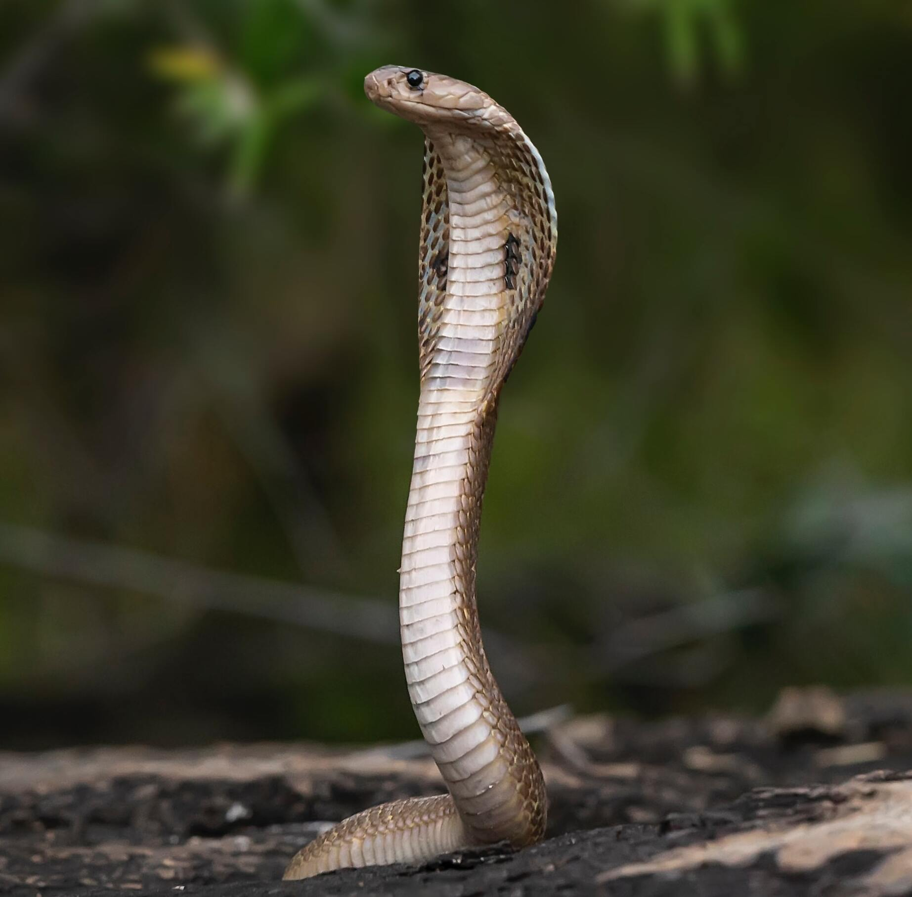

Sintomas da Cobra Real (Ophiophagus Hannah)
Seus sintomas podem levar a óbito
Humano
- Náuseas
- Vômito
- Paralisia da faringe e da língua
O que significa que quem for atacado, terá bastantes dificuldades em emitir sons e gritar
Cão
- Inchaço no pescoço
- Inchaço na região da picada
- Pele arroxeada
- Queda dos pelos
- Queda da pele
Gato
- Vermelhidão no local da picada
- Sangramento
- Perda de apetite
- Vômitos
- Queda de pelos
- Dificuldade para respirar
- Marcas de dentes no local
- Inchaço